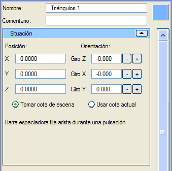
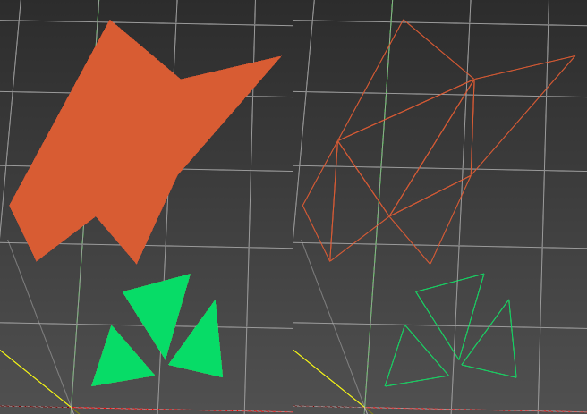

| |
|
Üçgen Oluşturma (Bağımsız veya Bitişik)
|
|
Genel Bilgiler Bu menüde herhangi bir boyutta, herhangi bir konumda ve herhangi bir açıda bağımsız veya bitişik üçgenler oluşturulabilir. Bağımsız üçgenler oluşturmak için, 3B görünümde istenen koordinatlarda her bir üçgenin üç köşe noktasına tıklamak yeterlidir. Eğer bitişik üçgenler oluşturuluyorsa, ilkinin üç köşe noktası seçildikten sonra, her yeni nokta, o noktaya en yakın kenarı kullanarak yeni bir üçgen oluşturur. Bu işlem, 3B görünümde "Esc" tuşuna basılarak sonlandırılır.  Seçenekler İsim: üçgenleri bir isimle tanımlamayı sağlar. Yorum: bu üçgenler nesnesine açıklayıcı bir yorum eklemeyi sağlar. Renk: Renk butonu (bu örnekte mavi) aracılığıyla üçgenler için bir renk belirtilebilir. Varsayılan renk rastgeledir. Konum (X, Y, Z): üçgenlerin tam konumunu belirtir. Yönelim (X dönüşü, Y dönüşü, Z dönüşü): kutunun her bir eksen etrafındaki dönüşünü belirtir. Dönüşler Z->X->Y sırasında uygulanır. Z ekseni etrafındaki dönüş (azimut, heading) -400º ile 400º arasında değerler alır. X ekseni etrafındaki dönüş (pitch) -360º ile 360º arasında değerler alır. Y ekseni etrafındaki dönüş (roll) -360º ile 360º arasında değerler alır. Sahneden Kot Al: üçgenlerin köşe noktalarının sahnedeki nesnelerin üzerine oturacağını belirtir. Mevcut Kotu Kullan: köşe noktaları oluşturulurken, bunlara Istram'ın "Mevcut Kotu"na karşılık gelen kot atanır.  Üçgen ekleme işlemi bittiğinde, nesne, sınırlayıcı kutusunun taban merkezine konumlandırılarak oluşturulur. Üçgen ekleme işlemi bittiğinde, nesne, sınırlayıcı kutusunun taban merkezine konumlandırılarak oluşturulur. Resimde, bir bağımsız üçgen oluşturma ve bir de bitişik üçgen oluşturma örneği gösterilmektedir. |